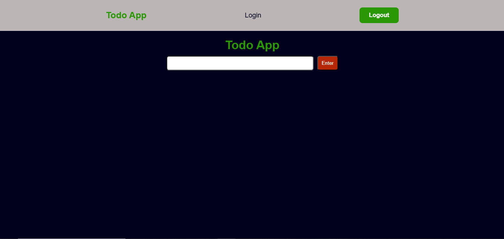
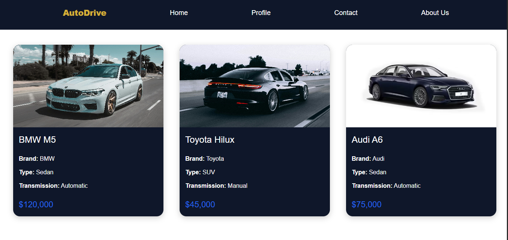

TodoFlow is a responsive task management web application built using HTML,
CSS, and JavaScript that helps users easily create, organize,
and track their daily tasks in a simple and efficient way.

AutoDrive is a responsive auto dealership web application built using
HTML, CSS, and JavaScript that allows users to browse a wide range of vehicles,
view detailed car listings, and explore prices and specifications in a clean and
user-friendly interface.It provides a smooth shopping experience for finding
the perfect car with ease and efficiency.
